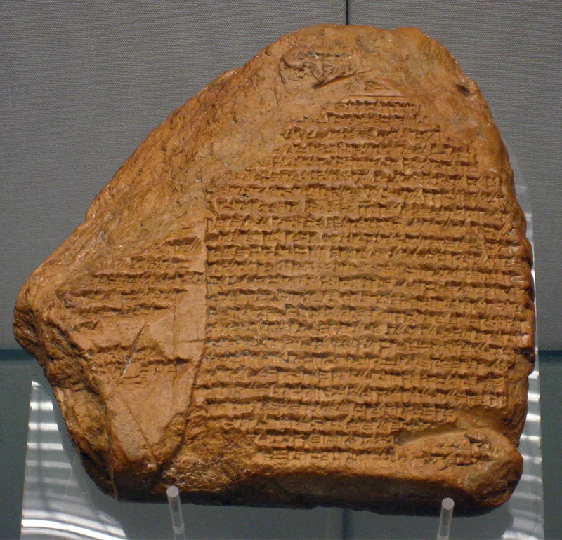
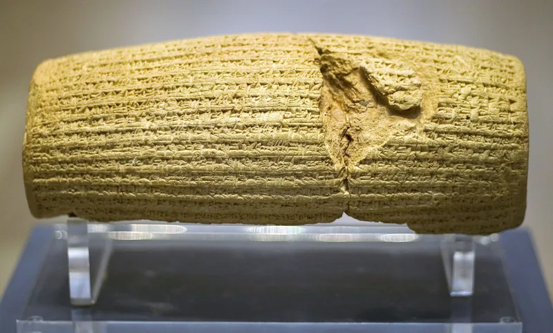

No good counter-argument has been published by the Watchtower.
Witnesses teach that Jerusalem fell in 607 BCE. Add the "seven times" of Daniel 4, counted as 2,520 years, and you reach 1914.
That is when they say Christ was enthroned unseen. In 1919 he then chose the Watchtower as his channel.
If 607 goes, all of that goes with it.
No historian dates the fall to 607. Tens of thousands of dated Babylonian business tablets point elsewhere.
So does the sky diary VAT 4956, whose 30 recorded moon and planet positions fix Nebuchadnezzar's 37th year to 568/567 BCE. Berossus and Ptolemy's canon agree.
All of it lands on 587/586 BCE. Their own magazine grants the point: secular historians usually say 587 (The Watchtower, Oct 1, 2011, p.
26).
Scripture says Judah would lie waste and serve Babylon seventy years (Jeremiah 25:11; 2 Chronicles 36:21). Babylon fell in 539 BCE.
The exiles were home by 537. Count seventy years back and you get 607.
Where clay tablets and God's word clash, the tablets yield. Copyists erred, court astronomers may have worked backwards, and the records passed through pagan hands.
Their 2011 article argues the moon data in VAT 4956 fits 588 BCE, and notes an eclipse that year.
They accept that same Babylonian record without question for 539 BCE. That date is the anchor of their own sum.
The corruption they allege covers exactly the twenty years the doctrine needs. Scripture does not require their count either.
Jeremiah 25:11 makes the seventy years a term of service by "these nations" to Babylon. Jeremiah 29:10 reads seventy years "at Babylon." Zechariah 1:12 counts seventy years of anger, 587 to 517.
And every regnal year of every Babylonian king is covered by dated contracts. There is no gap to put twenty years into.
Strong for you, and it holds up the whole building. No 607, no 1914.
No 1914, no inspection in 1919. No 1919, no appointment, and no duty to obey.
"You take the Babylonian records as sound for 539. Why are the same records wrong for 587?"


Scripture says seventy years, and counting back from 537 BCE gives 607.
The Watchtower's defense runs like this. The Bible says Judah would be a desolate waste, and would serve Babylon seventy years (Jeremiah 25:11; 2 Chronicles 36:21). Babylon fell in 539 BCE, a date secular chronology itself supplies. The exiles returned by 537. Count seventy literal years back from 537 and you get 607.
Where clay tablets and God's Word conflict, the tablets yield. Copyists erred. Court astronomers may have worked positions out backwards. And the Neo-Babylonian records passed through pagan and Seleucid hands. Their 2011 article argues that the lunar positions in VAT 4956 actually fit 588 BCE as Nebuchadnezzar's 37th year. That would place his 18th year at 607. It also notes that a lunar eclipse occurred in 588.
Strong for you, and it holds up the whole building. No 607, no 1914.
The defense does not hold together. It accepts the Babylonian record in full for 539 BCE. It calls the same record corrupt for 587. And the flaw it alleges spans exactly the twenty years the doctrine needs.
Scripture does not require their count either. Jeremiah 25:11 makes the seventy years a term of service by 'these nations' to Babylon, ending in 539. Jeremiah 29:10 reads 'seventy years for Babylon.' Zechariah 1:12 counts seventy years of anger, from 587 to 517.
The business-tablet record also runs unbroken. Every regnal year of every Neo-Babylonian king is covered by dated contracts. There is no gap to put twenty phantom years into. Nothing in the Watchtower's reply engages that.